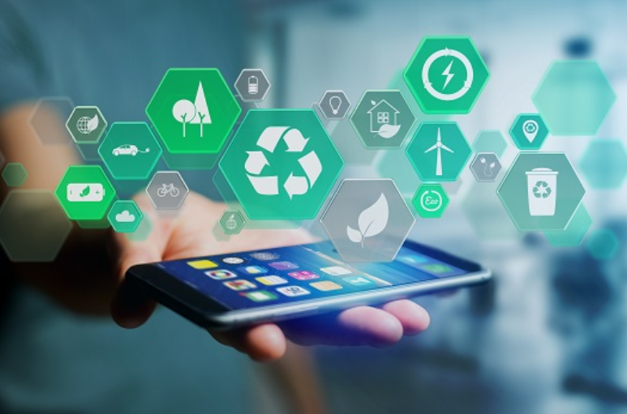

Aplicativos Facilitam Consumo Colaborativo e Sustentável
A ascensão da economia compartilhada, impulsionada por aplicativos inovadores, está transformando a maneira
como consumimos recursos. Ao conectar indivíduos e promover o uso eficiente de bens e serviços, essas
plataformas estão redefinindo noções de posse, sustentabilidade e comunidade.

Consumo Colaborativo: Compartilhar em Vez de Possuir
O consumo colaborativo baseia-se no acesso a recursos subutilizados, reduzindo a necessidade de produção em
massa. Aplicativos atuam como intermediários eficazes:
Mobilidade:BlaBlaCar e Uber facilitam caronas compartilhadas, diminuindo o número de
veículos nas estradas.
Espaços:Airbnb permite que anfitriões rentabilizem quartos ociosos, enquanto viajantes
evitam grandes redes hoteleiras.
Bens Materiais:Plataformas como Freecycle (doação de itens) e Rent the Runway (aluguel
de roupas) incentivam a reutilização.
Sustentabilidade: Reduzindo Pegadas Ambientais
Ao maximizar a vida útil de produtos, esses apps combatem o desperdício:
Alimentos:OLIO e Too Good To Go conectam usuários a excedentes alimentares de
restaurantes e vizinhos.
Moda:Vinted e ThredUP promovem a venda de roupas usadas, desafiando a fast fashion.
Eletrônicos:Back Market oferece dispositivos recondicionados, reduzindo lixo
eletrônico.
Benefícios Multidimensionais
Ambientais:Menos produção significa redução de emissões de CO₂ e desperdício.
Econômicos:Usuários economizam (alugando) ou ganham (alugando seus bens), enquanto
empresas surgem com modelos inovadores.
Sociais:Comunidades locais se fortalecem, criando redes de confiança e apoio mútuo.
Desafios a Superar
Segurança e Confiança:Sistemas de avaliação e verificação de identidade (como no
Airbnb) são cruciais.
Regulação:Conflitos com setores tradicionais (ex.: protestos de taxistas contra Uber)
exigem diálogo e adaptação.
Exclusão Digital:Populações sem acesso a smartphones ou internet ficam à margem.
Futuro: Tecnologia a Serviço da Colaboração
Tendências promissoras incluem:
Blockchain:Para transações transparentes e seguras.
Inteligência Artificial:Otimização de rotas (caronas) ou previsão de demanda (estoques
de alimentos).
IoT (Internet das Coisas):Geladeiras inteligentes que alertam sobre validade de
alimentos, integradas a apps de doação.
Aplicativos de consumo colaborativo não são moda passageira, mas pilares de uma economia circular e
sustentável. Ao priorizar o acesso sobre a posse, eles oferecem um caminho viável para enfrentar crises
ambientais e sociais. Seus desafios exigem colaboração entre usuários, empresas e governos, mas seu
potencial de impacto positivo é inegável. A revolução digital, quando aliada à consciência coletiva, pode
ser uma força poderosa para um futuro mais verde e conectado.